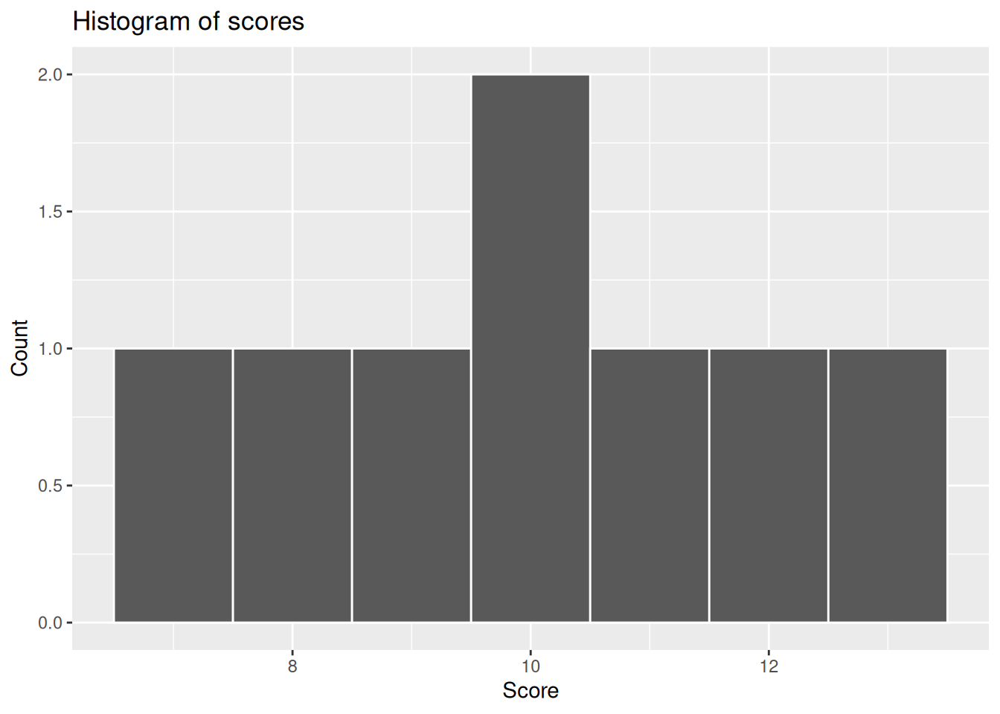
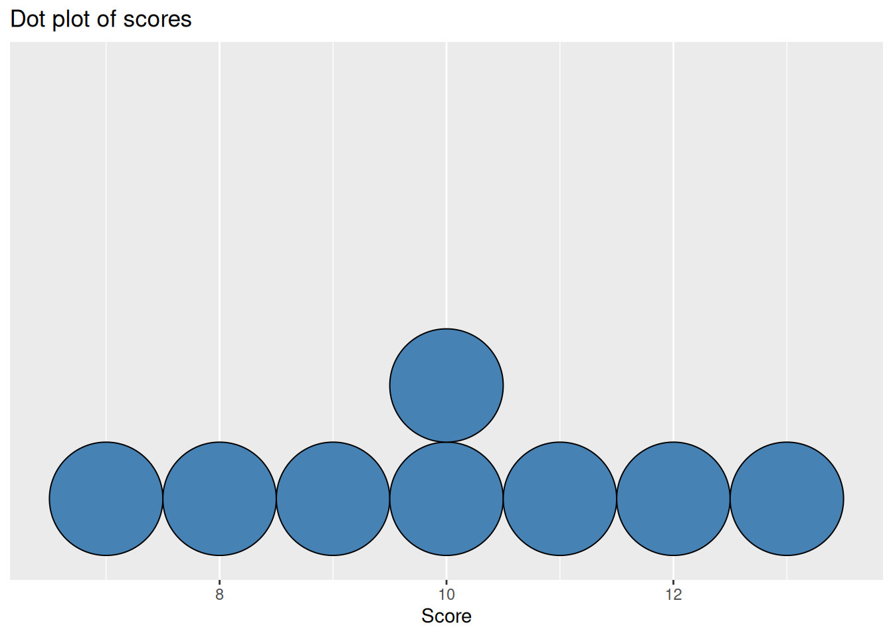

Code
pnorm(1.24) # proportion at or below z = 1.24
pnorm(-1.94) # grip-strength example (~0.03)z-scores, statistics toolbox, and one numerical variable
Project: Project 2 — Estimating the Truth · Prerequisite: Read 1 and Quiz A · Next: Quiz B, demo lab, exercise lab.
Complete Read 1 and Quiz A first. This reading adds standardization, the methods-map habit, and summaries/graphs for one numerical variable. t.test() for hypothesis testing is optional for Project 2 (CI focus).
Three sections — use Check yourself before Quiz B.
After this reading you should be able to:
Normal distribution and standardization
Organizing the statistics toolbox — z-test for a proportion, variable types, CI vs. testing
prop.test() and read off a confidence interval as well.One numerical variable — center, graphs, and the one-sample t-test
summarize()).t.test() for a one-sample t-test and confidence interval for the population mean.You already used the Empirical Rule and normal curves for binomial counts in Read 1. Here we standardize any normal reference to compare observations on a common scale (z-scores) and read off areas with the standard normal.
Example: Who is taller, Rosanna or Peter?
Two observations:
Annarose’s height: 67 inches (women’s reference group).
Peter’s height: 72 inches (men’s reference group).
So Peter is taller when heights are compared directly (72 vs 67 inches).
But who is taller relative to their group?
Draw a reference distribution for the stature of men and a reference distribution for the stature of women.
Identify the location of the center of the stature distribution on each plot and show one and two standard deviations (SD) on either side.
Add vertical lines to the appropriate distribution at Rosanna and Peter’s heights. Who appears to be taller compared with the reference distributions?
According to the plots, Annarose is taller relative to her group (see z-scores below).
Instead of plotting two different reference distribution and comparing the observations where they fall relative to two SD from the center, we can compare the heights relative to their groups directly via z-scores.
\[ z = \frac{\text{observation} - \text{mean of reference}}{\text{SD of reference}} \]
A z-score measures the number of SDs the observation is above the mean (or below if the difference is negative).
Women: \(\mu=64\), \(\sigma=2.5\). Annarose 67 in → \(z=(67-64)/2.5=1.2\).
Men: \(\mu=70\), \(\sigma=3\). Peter 72 in → \(z=(72-70)/3\approx 0.67\).
Annarose has the larger z-score — she is more unusually tall for her group.
If we assume the shape of a reference distribution is Normal then we can use a table or online calculator or R to find the percentage in the population that corresponds to a particular z-score.
A standard normal distribution is a normal distribution with mean 0 and SD 1.
Notice that by the Empirical Rule, we can see that 68% of values are between -1 and 1, 95% are between -2 and 2, and 99% are between -3 and 3. The proportions of values corresponding to all those below a particular value are given in a Standard Normal Table:
In R, pnorm(z) returns the area to the left of \(z\) on the standard normal curve:
pnorm(1.24) # proportion at or below z = 1.24
pnorm(-1.94) # grip-strength example (~0.03)Example: Rosanna’s grip strength this morning using her dominant hand was 38.8 lbs. Suppose that mean grip strength is 66lbs and SD is 14lbs for women in their early forties in the US. Compute Rosanna’s z-score and use it to find the percentage of women in their early forties in the US that Rosanna is stronger than assuming that this distribution is normal.
\(z=(38.8-66)/14\approx -1.94\). About 3% of the reference group has grip strength below hers (use the table, calculator, or pnorm(-1.94) in R).
Optional: measure your own grip strength, pick a reference row from the table below, and compute \(z=(\text{yours}-\mu)/\sigma\).
| Group | Mean (lbs) | SD (lbs) |
|---|---|---|
| College aged men | 104 | 18 |
| College aged women | 62 | 16 |
| Great Grandmothers | 44 | 10 |
Use the normal table or calculator: \(P(Z<z)\) is the proportion weaker than you when \(z\) is your score.
(use the online calculator or Standard Normal Table) ::: {.callout-tip icon=false} ## Check yourself — Normal distribution and standardization
Women’s heights: \(\mu=64\), \(\sigma=2.5\) inches. Annarose is 67 inches. Compute her z-score.
Men: \(\mu=70\), \(\sigma=3\). Newton is 72 inches. Compute his z-score.
Who is more unusually tall relative to their group, Annarose or Newton?
If \(Z\) is standard normal, what does \(P(Z \leq 1.24)\) represent?
:::
\(z = (67-64)/2.5 = 1.2\) — she is 1.2 SD above the women’s mean.
\(z = (72-70)/3 \approx 0.67\).
Annarose (\(z=1.2\) vs \(z=0.67\)).
The proportion of standard-normal values at or below 1.24 (about 89%).
prop.test() in one line also gives a confidence interval.Last lecture we saw the z-score as a way to compare relative standing in two different groups or within a group, assuming the reference group is normally distributed.
Let’s apply the same idea of shifting and scaling to conducting a hypothesis test of a population proportion or probability \(p\).
If \(np \geq 10\) and \(n(1-p) \geq 10\), then the normal distribution can be used to approximate the binomial distribution of \(X\) = number of successes in \(n\) trials, where \(p\) is the probability of success in a single trial and the trials are independent.
In Module 2 Read 1 you used this fact along with the empirical rule that 95% of the values of a normal distribution are within 2 SDs of the mean. We computed the mean of \(X\) as \(\mu=np\) and the SD of \(X\) as \(\sigma=\sqrt{np(1-p)}\), and then rejected the null hypothesis if our observed value \(x\) was below \(\mu-2\sigma\) or above \(\mu + 2\sigma\).
Another way to conduct this test is to standardize the observed value \(x\) by subtracting the mean and dividing by its standard deviation (also called standard error in this context):
Definition: standardized test statistic
\[ \frac{\text{observed statistic} - \text{mean of sampling distribution}}{\text{standard deviation of sampling distribution}} \]
In the case of the statistic being a count of successes \(X\) from a binomial random process with \(n\) and \(p\), the standardized test statistic is
\[ z=\frac{x-np}{\sqrt{np(1-p)}}. \]
This value can be compared with the standard normal distribution; a null hypothesis is rejected if \(z\) is below \(-2\) or above \(2\) (the standard normal distribution has mean 0 and SD 1).
Equivalently, a standardized test statistic can be computed using the observed proportion \(\hat{p}=x/n\): it is the same as the one based on \(x\), but all terms are divided by \(n\):
\[ z=\frac{\hat{p}-p}{\sqrt{p(1-p)/n}} \]
Note that \(p\) is the value of the population proportion or probability hypothesized under the null hypothesis, and \(\hat{p}\) is the observed proportion from \(n\) trials.
Example: Test whether a coin is fair if 16 heads were observed in 20 flips using a significance level of 0.05. Use a standardized test statistic and assume it follows the standard normal distribution.
Under \(H_0: p=0.5\), \(np=10\) and \(n(1-p)=10\). \(z=\dfrac{16-20(0.5)}{\sqrt{20(0.5)(0.5)}}=\dfrac{6}{\sqrt{5}}\approx 2.68\). This is beyond \(\pm 2\), so we reject \(H_0\) at \(\alpha=0.05\).
Same example in one line of R (optional for Project 2 — the project uses CI, not hypothesis test):
prop.test(x = 16, n = 20, p = 0.5)
1-sample proportions test with continuity correction
data: 16 out of 20, null probability 0.5
X-squared = 6.05, df = 1, p-value = 0.01391
alternative hypothesis: true p is not equal to 0.5
95 percent confidence interval:
0.5573138 0.9338938
sample estimates:
p
0.8 Interpretation: By default the test is two-sided (the alternative is that the coin is not fair). The output includes not only the p-value but also the lower and upper bounds of a confidence interval.
We’ve now seen quite a few tools for analyzing data. Let’s think about how to keep them organized. It’s important to consider what sort of data we have and the purpose of the analysis — what we want.
The purpose of a descriptive statistics analysis is to describe relevant information contained in a particular dataset.
If our data are binary outcomes (e.g. successes/failures, yes/no, good/bad), we have described them using:
Example: Five students were asked: what is the maximum number of hot dogs you could eat?
Review notation: \(x\), \(n\), and \(\hat{p}=x/n\) for count, sample size, and observed proportion.
If our data are a set of numbers, we summarize the center with the mean and the spread with a standard deviation.
In general, the type of calculation we use to describe a dataset depends on the type of information we have. Here are two useful definitions:
A variable is a characteristic that may vary from object to object or person to person in our population of interest.
We’ll consider two types of variables:
Examples: Classify each of the following variables as categorical or numerical:
If we want to infer the value of a parameter in the population from sample data, we currently have two inferential tools: confidence intervals and tests.
Confidence intervals answer: “What is a range of values that are reasonable for the parameter?” Tests compare the parameter against a hypothesized value.
We already have tests and confidence intervals for a population proportion/probability \(p\); these apply when the data are binary categorical.
We’ll spend the next few weeks expanding these tools to cover the cases of one numerical variable, two categorical variables, one numerical and one categorical variable, and two numerical variables.
We’ll also see a third inferential tool: prediction. ::: {.callout-tip icon=false} ## Check yourself — Organizing the statistics toolbox
Write the standardized statistic for testing \(H_0: p=p_0\) using observed proportion \(\hat{p}\).
Stem diameter (cm) for trees — numerical or categorical?
Parasite present: yes/no — numerical or categorical? Binary?
One binary variable from a sample: name one descriptive summary and one inferential tool.
:::
\(z = (\hat{p}-p_0)/\sqrt{p_0(1-p_0)/n}\) when normal approx conditions hold.
Numerical (measurement).
Categorical, binary.
Descriptive: \(\hat{p}\) or count. Inferential: 95% CI for \(p\) or binomial/z test.
Project 2 may use a mean CI via $\bar{x} \pm 2s/\sqrt{n}$ (or t.test for small \(n\)). The one-sample t-test below is enrichment — not required on the Project 2 rubric.
summarize()).t.test() for a one-sample t-test and confidence interval for the population mean.A numerical variable takes values that are counts or measurements where it is meaningful to sort them in order and to compute distance between any two of them. We usually report center and spread; this lecture focuses on center and on graphs for the whole distribution.
Mean (average). For values \(x_1,\ldots,x_n\), the sample mean is
\[ \bar{x} = \frac{1}{n}\sum_{i=1}^n x_i. \]
The capital Greek letter Sigma (\(\Sigma\)) denotes summation. The expression \(\sum_{i=1}^n x_i\) means: add \(x_1 + x_2 + \cdots + x_n\), including every observation of \(x\), indexed by \(i\) from \(1\) to \(n\). Multiplying that total by \(\frac{1}{n}\) rescales it: you are taking the combined amount (the total sum) and expressing it as if it belonged to a single unit, “per person,” “per observation,” or “per employee” in a payroll setting.
How to read the mean. Think: total of all values, spread evenly across \(n\) slots. If everyone’s contribution were replaced by the same number while keeping the same total, that common number would be the mean.
Visual (balance point). On a dot plot with one dot per observation, the mean is the balance point (center of mass) along the horizontal axis: equal weight at each dot, and the axis would balance at \(\bar{x}\). On a histogram, you get the same idea if you treat each bin’s count (or properly scaled density) as sitting at the bin center, that is a standard approximation; the exact mean always comes from the original values, not from the drawn bins.
Median. Sort the values from smallest to largest. If \(n\) is odd, the median is the middle value. If \(n\) is even, it is the average of the two middle values. In the usual case with no ties sitting exactly on the split, the median is the value such that half of the observations are below it and half are above it. (If many values tie at the median, the “50% / 50%” story is still right in spirit but the counts on each side need a careful definition, we keep the ordered-list rule for computing it.)
How to read the median. The median is a positional measure: it marks the center of the ordered list, not the balance of the total of the numbers. It is not pulled in dollars-and-cents by a few huge values in the same way the mean is.
Example: salaries. Suppose you list every employee’s annual salary. The median answers a “typical employee” question: half of the staff earn less than or equal to that amount and half earn more than or equal to it. The median is a useful picture of how pay feels in the middle of the workforce. The mean answers a “budget” question: if the firm paid the same total in salaries but split it evenly across every employee, each would get the mean. So the mean is the per-employee share of the fixed payroll total; it is what you need if you want to think about resizing the organization (“what if we had twice as many people with the same total wage bill?”) or track aggregate cost per head.
Which should you report? There is no single correct choice for every problem. If the goal is to describe the feeling of a typical standing, the median is often easier to interpret. If the goal is to tie summaries to a total, a rate per unit, or planning with a fixed sum divided among \(n\) units, the mean is a better choice. Report what matches your question and when in doubt, both plus a graph can be clearer than either alone.
Here the mean and median match.
The mean is pulled toward the large observation; the median stays with the middle of the bulk of the data. For describing a “typical” case here, the median (\(5\)) is the point at which about half the values are less than it and half are greater than it. The mean reflects the total (\(127\)) spread across seven slots, including the one very large contribution and is the “balance point” of all seven values.
Syntax note: In dplyr, summarize() and summarise() are the same function (American vs. British spelling). For pipes, base R’s native |> (R 4.1+) works like the magrittr pipe %>% from the tidyverse: both pass the left-hand side into the first argument of the function on the right. This lecture uses |> and summarize(); use whichever spelling and pipe you prefer, they behave the same here.
The pipe |> sends the data on its left into the first argument of the function on its right. We often pipe a data frame (e.g. a dataset with examples in rows and variables in columns) into summarize() to compute summaries.
if (!requireNamespace("tidyverse", quietly = TRUE)) {
install.packages("tidyverse", repos = "https://cloud.r-project.org")
}
library(tidyverse)
scores <- tibble(
score = c(7, 8, 9, 10, 10, 11, 12, 13)
)
scores |>
summarize(
n = n(),
mean_score = mean(score),
median_score = median(score)
)# A tibble: 1 × 3
n mean_score median_score
<int> <dbl> <dbl>
1 8 10 10Here n() counts rows inside summarize() (one row per student, say).
Histogram, split the axis into bins and show counts (or densities) in each bin.
Dot plot, stack dots along the axis so you see each value (or rounded value) and repeats clearly.
ggplot(scores, aes(x = score)) +
geom_histogram(binwidth = 1, boundary = 6.5, color = "white") +
labs(
title = "Histogram of scores",
x = "Score",
y = "Count"
)
ggplot(scores, aes(x = score)) +
geom_dotplot(binwidth = 1, method = "histodot", fill = "steelblue") +
labs(
title = "Dot plot of scores",
x = "Score",
y = NULL
) +
scale_y_continuous(NULL, breaks = NULL) # hide stacking axis
Adjust binwidth so the plot matches how you think about the scale (e.g. group by every 1 unit, 10 units, 100 units…) or leave this input out to let R use a default setting.
t.test()Setting. We have a simple random sample of size \(n\) from a population with unknown mean \(\mu\). We want to test whether \(\mu\) equals a hypothezed value \(\mu_0\) or to estimate reasonable values for \(\mu\) via a confidence interval.
Definition: t-statistic (one sample). With sample mean \(\bar{x}\) and sample SD \(s\),
\[ t = \frac{\bar{x} - \mu_0}{s/\sqrt{n}}. \]
The denominator is the standard error of the mean. Under \(H_0: \mu = \mu_0\), and when the usual conditions hold (random sample and either \(n\) is large ($>30$) or the population is roughly symmetric), \(t\) is compared to a Student t distribution with \(\text{df} = n - 1\). The exact shape depends on sample size and is not calculable by hand. In modern times, we use software for p-values and intervals, not tables by hand.
t.test() for one sample: pass the numeric vector, the null mean mu, and optionally alternative ("two.sided", "greater", "less"). The default output includes a test and a 95% confidence interval for \(\mu\) (two-sided alternative).
t.test(scores$score, mu = 9, alternative = "two.sided")
One Sample t-test
data: scores$score
t = 1.4142, df = 7, p-value = 0.2002
alternative hypothesis: true mean is not equal to 9
95 percent confidence interval:
8.327958 11.672042
sample estimates:
mean of x
10 Interpretation. The confidence interval is the set of estimates for \(u\) that we believe contain the true value of \(\mu\) with $95\%$ confidence. The p-value summarizes evidence against \(H_0: \mu = \mu_0\) in favor of the stated \(H_a\): reject the null \(H_0\) in favor of \(H_a\) if the p-value is less than the significance level \(\alpha\) (often taken to be 0.05 but remember you should pick this value based on the seriousness of a Type I error).
For a single numerical variable, mean and median describe center; ggplot2 gives histograms and dot plots of the full distribution. For inference about one population mean, the one-sample t-test and interval come from t.test() on the sample vector. ::: {.callout-tip icon=false} ## Check yourself — One numerical variable — center, graphs, and t-tools
Data: 3, 5, 5, 7, 9. Compute mean and median.
Data: 2, 3, 4, 5, 6, 7, 100. Which summary is better for a “typical” salary?
In tidyverse, which function adds a column with the same number of rows?
Which ggplot geometry makes a histogram for one numerical variable?
:::
Mean \(= 5.8\). Median \(= 5\).
Median (\(5\)) — mean is pulled by the outlier.
mutate().
geom_histogram() (after aes(x = variable)).